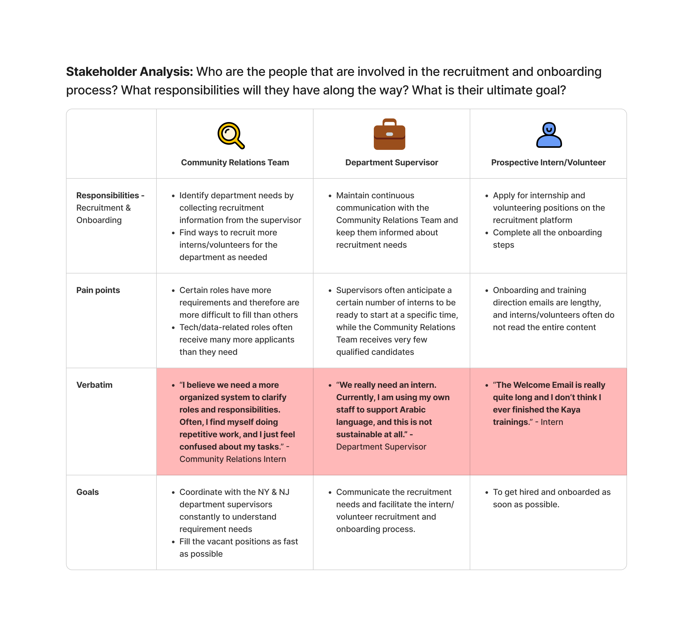
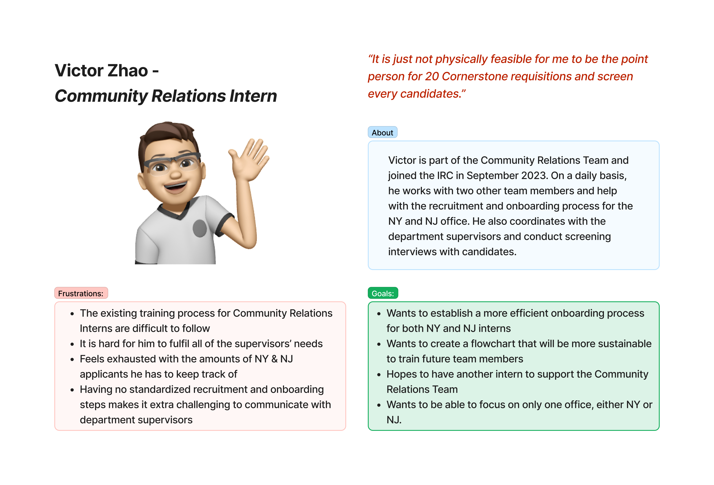
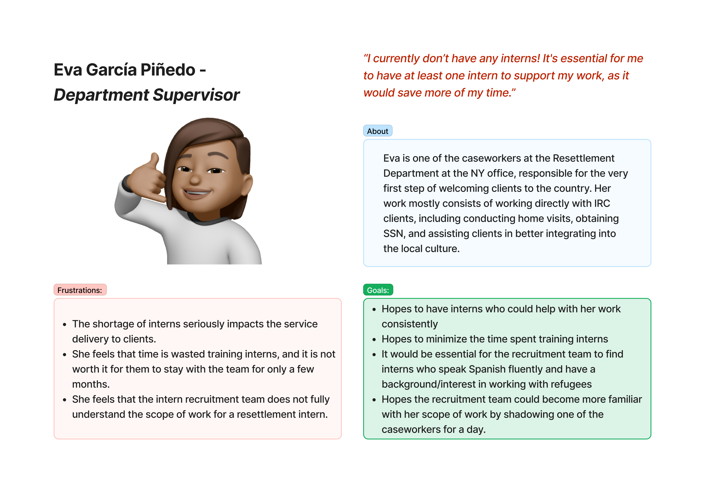
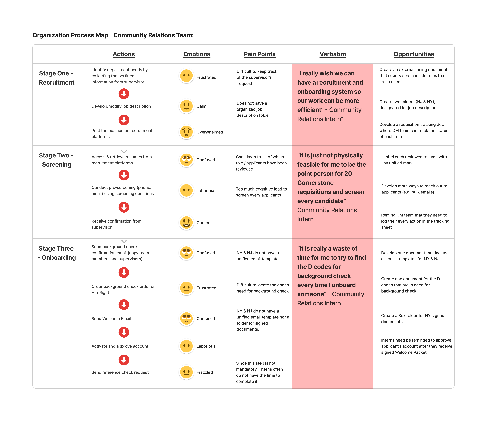

Building Stronger Foundations: Research-Driven Insights into Intern Recruitment Strategy in Non-Profits
A problem nobody assigned me. Interns, supervisors, and Community Relations staff were all talking past each other during recruitment and onboarding, so I ran a self-initiated research project to find out where the system was actually breaking.
Challenge
Following organizational cutbacks, the Community Relations team entered a growth phase that sharply increased demand for interns and volunteers, but recruitment systems, procedures, and staffing hadn't scaled to match.
Finding
The recruitment and onboarding steps mostly existed; what was missing was ownership of the handoffs between them, and between what supervisors expected and what interns were actually told.
Impact
Delivered three priority recommendations to Community Relations leadership. Research contributed to 25% increase in new hires for the Summer 2024 intern recruitment cycle.
A global humanitarian organization scaling its NY & NJ offices
The International Rescue Committee operates as a global humanitarian organization headquartered in New York, providing critical support to vulnerable populations worldwide. The New York Resettlement, Asylum, and Integration (RAI) office represents one of the organization's largest domestic operations, delivering immediate assistance, including food, housing, and medical support, to refugees and asylees upon arrival.
Key stakeholders
Recruit & place
Rely on placements
A recruitment system that hadn't scaled with demand
Following organizational cutbacks, the Community Relations team entered a growth phase creating "significantly increased demand for interns and volunteers." However, recruitment systems, procedures, and staffing remained inadequate for the volume required.
Community Relations intern responsibilities
- Communicate with department supervisors in NY and NJ offices regarding staffing needs
- Recruit qualified interns and volunteers across departments and locations
- Facilitate onboarding for incoming interns and volunteers
- Provide training and guidance to new Community Relations Interns
Why change was necessary. The Community Relations Intern team bears sole responsibility for recruiting across all departments in both offices. These placements directly influence support-staff availability and, consequently, service quality to clients. An ongoing intern shortage reduces departmental capacity and overall service quality.
What the research needed to answer
- Understand the needs and motivations of the Community Relations Team and department supervisors
- Identify pain points in recruitment and onboarding, and uncover their root causes
- Examine current training processes for Community Relations Interns
- Discover improvement opportunities for recruitment and onboarding systems
- Inform the design of efficient, streamlined systems that enhance recruitment, onboarding, and training
Three methods, one end-to-end view of the intern lifecycle
8
Interviews
Semi-structured interviews across interns, supervisors & management.
2
Focus Groups
90-minute focus groups with six current interns from NY & NJ.
3
Days Shadowing
Days shadowing interns in Housing and Adult Education & Economic Empowerment.
Semi-structured interviews
Eight interviews with two current Community Relations Interns, one Community Relations Manager, three department supervisors from the NY/NJ offices, and two current interns/volunteers, aimed at understanding lived experiences, pain points, expectations, and inconsistencies across perspectives.
Focus groups
Two 90-minute sessions with six current interns from multiple departments across the NY and NJ offices, facilitating collaborative dialogue that surfaced insights peer-to-peer reflection could reach but one-on-one interviews couldn't.
Program observation (field study)
Three days shadowing interns in the Housing and Adult Education & Economic Empowerment departments, to observe workflow patterns, challenges, workarounds, and how interns actually interacted with team members and resources in their natural work environment.
Four recurring pain points, one system that never scaled
Initial discovery surfaced four program pain points behind the intern shortage:
- Lack of standardization. Limited formal documentation or process guidance exists for recruitment, and onboarding procedures differ between the NY and NJ offices.
- Staffing limitations. The Community Relations team lacks the resources for effective cross-location recruitment.
- Limited cross-department understanding. Unclear departmental needs and responsibilities make it difficult to target the right candidates.
- Historical inaction. Previous concerns remained unaddressed due to limited intern capacity to act on them.

"I believe we need a more organized system to clarify roles and responsibilities. Often, I find myself doing repetitive work, and I just feel confused about my tasks." — Community Relations Intern
"We really need an intern. Currently, I am using my own staff to support Arabic language, and this is not sustainable at all." — Department Supervisor
Two people whose goals were pulling against each other
The research repeatedly surfaced the same tension from two directions: a Community Relations Intern stretched across every department's requisitions, and a Department Supervisor who couldn't get the one intern they actually needed. Two personas made that tension concrete enough to design against.


Mapping the handoffs, not just the steps
A process map of the Community Relations Team's day-to-day work traced their actions, emotions, and pain points at each stage of recruitment and onboarding, from posting a role through sending the first welcome email.

I then consolidated that view into a cross-functional map spanning both offices, giving every stakeholder, from department supervisors to interns themselves, a single, centralized view of each step in the process.

Two challenges, three priority recommendations
Two recurring challenges
Lack of accessible communication channels
Communication gaps between the Community Relations team and resettlement supervisors created onboarding confusion and limited departmental understanding, resulting in misaligned intern placements that hurt both satisfaction and program effectiveness.
Lack of clarity and consistency in process
Although a standardized workflow chart had been developed, the short intern tenure made consistent implementation difficult, particularly when training incoming Community Relations team members.
Three priority recommendations
1. Prioritize Community Relations intern placement
Given the high cognitive load and limited time managing multi-departmental inquiries, staff this team first. At least 3–4 Community Relations Interns should be in place before recruiting for other departments, to ensure adequate capacity for delegation and coordination.
2. Foster alignment between interns & hiring departments
Reading job descriptions alone proved insufficient for Community Relations Interns to understand departmental scope. I recommended interns regularly shadow department meetings and participate in key activities, to better grasp department-specific needs and improve placement quality.
3. Standardize training & regular check-ins
Given cross-office responsibilities, I recommended a centralized, externally-facing intake sheet where department supervisors input role-specific needs and expectations directly, making recruitment "more transparent, structured, and efficient."
Nothing in my job description asked me to fix this. But it was exactly the kind of insight I couldn't just leave on the table, so I initiated the project myself. It was the first time I built something instead of just writing up what I'd found: the moment noticing a human problem stopped being the finish line, and I wanted to sit with it long enough to hand back something that could actually change how people experienced the process.